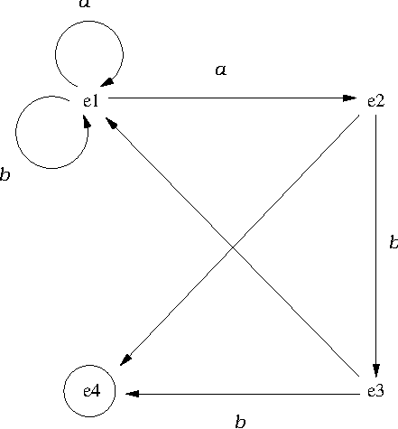

Tema 3: Estructuras
Índice
1. Segmentos verticales y horizontales
- Nota: El código del programa que se desarrollará en esta sección se encuentra en ver_hor.pl.
1.1. Representación de puntos y segmentos
punto(X,Y)representa el punto de coordenadas(X,Y).seg(P1,P2)representa el segmento cuyos extremos son los puntosP1yP2.
1.2. Segmentos horizontales y verticales
Relaciones:
horizontal(S)se verifica si el segmentoSes horizontal.vertical(S)se verifica si el segmentoSes vertical. Por ejemplo,
?- vertical(seg(punto(1,1),punto(1,2))). true. ?- vertical(seg(punto(1,1),punto(2,2))). false. ?- horizontal(seg(punto(1,2),punto(1,3))). false. ?- horizontal(seg(punto(1,2),punto(4,2))). true.
Programa:
horizontal(seg(punto(_,Y),punto(_ ,Y))). vertical(seg(punto(X,_),punto(X,_ ))).
1.3. Consultas sobre segmentos
¿Es vertical el segmento que une los puntos
(1,1)y(1,2)??- vertical(seg(punto(1,1),punto(1,2))). true.
¿Es vertical el segmento que une los puntos
(1,1)y(2,2)??- vertical(seg(punto(1,1),punto(2,2))). false.
¿Hay algún
Ytal que el segmento que une los puntos(1,1)y(2,Y)sea vertical??- vertical(seg(punto(1,1),punto(2,Y))). false.
¿Hay algún
Xtal que el segmento que une los puntos(1,2)y(X,3)sea vertical??- vertical(seg(punto(1,2),punto(X,3))). X = 1.
¿Hay algún
Ytal que el segmento que une los puntos(1,1)y(2,Y)sea horizontal??- horizontal(seg(punto(1,1),punto(2,Y))). Y = 1.
¿Para qué puntos el segmento que comienza en
(2,3)es vertical??- vertical(seg(punto(2,3),P)). P = punto(2, _2328).
¿Hay algún segmento que sea horizontal y vertical?
?- vertical(S),horizontal(S). S = seg(punto(_3356, _3358), punto(_3356, _3358)). ?- vertical(_),horizontal(_). true.
2. Base de dato de familias.
- Nota: El código del programa que se desarrollará en esta sección se encuentra en familia.pl.
2.1. Representación de las familia
- Descripción de la familia 1 :
- el padre es Tomás García Pérez, nacido el 7 de Mayo de 1970, trabaja de profesor y gana 75 euros diarios
- la madre es Ana López Ruiz, nacida el 10 de marzo de 1972, trabaja de médica y gana 100 euros diarios
- el hijo es Juan García López, nacido el 5 de Enero de 1990, estudiante
- la hija es María García López, nacida el 12 de Abril de 1992, estudiante
Representación de la familia 1:
familia(persona([tomas,garcia,perez], fecha(7,mayo,1990), trabajo(profesor,75)), persona([ana,lopez,ruiz], fecha(10,marzo,1972), trabajo(medica,100)), [ persona([juan,garcia,lopez], fecha(5,enero,1990), estudiante), persona([maria,garcia,lopez], fecha(12,abril,1992), estudiante) ]).
- Descripción de la familia 2:
- el padre es José Pérez Ruiz, nacido el 6 de Marzo de 1973, trabaja de pintor y gana 150 euros/día
- la madre es Luisa Gálvez Pérez, nacida el 12 de Mayo de 1974, es médica y gana 100 euros/día
- un hijo es Juan Luis Pérez Pérez, nacido el 5 de Febrero de 2000, estudiante
- una hija es María José Pérez Pérez, nacida el 12 de Junio de 2002, estudiante
- otro hijo es José María Pérez Pérez, nacido el 12 de Julio de 2004, estudiante
Representación de la familia 2:
familia(persona([jose,perez,ruiz], fecha(6,marzo,1973), trabajo(pintor,150)), persona([luisa,galvez,perez], fecha(12,mayo,1974), trabajo(medica,100)), [ persona([juan_luis,perez,perez], fecha(5,febrero,2000), estudiante), persona([maria_jose,perez,perez], fecha(12,junio,2002), estudiante), persona([jose_maria,perez,perez], fecha(12,julio,2004), estudiante) ]).
2.2. Consultas sobre las familias
¿Existe alguna familia sin hijos?
?- familia(_,_,[]). false.
¿Existe alguna familia con tres hijos?
?- familia(_,_,[_,_,_]). true.
¿Existe alguna familia con cuatro hijos?
?- familia(_,_,[_,_,_,_]). false.
Buscar los nombres de los padres de familia con tres hijos
?- familia(persona(NP,_,_),_,[_,_,_]). NP = [jose, perez, ruiz] ; false.
2.3. Ampliación con los hombres casados
casado(X)se verifica siXes un hombre casado.casado(X) :- familia(X,_,_).
Consulta:
?- casado(X). X = persona([tomas, garcia, perez], fecha(7, mayo, 1990), trabajo(profesor, 75)) ; X = persona([jose, perez, ruiz], fecha(6, marzo, 1973), trabajo(pintor, 150)) ; false.
2.4. Ampliación con las mujeres casadas
casada(X)se verifica siXes una mujer casada.casada(X) :- familia(_,X,_).
Consulta:
?- casada(X). X = persona([ana, lopez, ruiz], fecha(10, marzo, 1972), trabajo(medica, 100)) ; X = persona([luisa, galvez, perez], fecha(12, mayo, 1974), trabajo(medica, 100)) ; false.
2.5. Preguntas compuestas
Buscar los nombres de las mujeres casadas que trabajan
?- casada(persona([N,_,_],_,trabajo(_,_))). N = ana ; N = luisa ; false.
2.6. Resumen de conceptos introducidos
- Uso de objetos estructurados.
- Prolog como lenguaje de consulta de bases de datos.
- Bases de datos como conjuntos de hechos.
- Selectores.
- Abstracción de datos.
3. Simulación de un autómata
- Nota: El código del programa que se desarrollará en esta sección se encuentra en automata.pl.
3.1. Representación del autómata
- Autómata no determinista (con estado final
e3):
 final(E)se verifica siEes el estado final.final(e3).
trans(E1,X,E2)se verifica si se puede pasar del estadoE1al estadoE2usando la letraXtrans(e1,a,e1). trans(e1,a,e2). trans(e1,b,e1). trans(e2,b,e3). trans(e3,b,e4).
nulo(E1,E2)se verifica si se puede pasar del estadoE1al estadoE2mediante un movimiento nulo.nulo(e2,e4). nulo(e3,e1).
acepta(E,L)se verifica si el autómata, a partir del estadoEacepta la listaL. Por ejemplo,?- acepta(e1,[a,a,a,b]). true ; false. ?- acepta(e2,[a,a,a,b]). false.
Su definición es
acepta(E,[]) :- final(E). acepta(E,[X|L]) :- trans(E,X,E1), acepta(E1,L). acepta(E,L) :- nulo(E,E1), acepta(E1,L).
3.2. Consultas sobre el autómata
Determinar si el autómata acepta la lista
[a,a,a,b]?- acepta(e1,[a,a,a,b]). true ; false.
Determinar los estados a partir de los cuales el autómata acepta la lista
[a,b]?- acepta(E,[a,b]). E=e1 ; E=e3 ; false.
Determinar las palabras de longitud 3 aceptadas por el autómata a partir del estado
e1?- acepta(e1,[X,Y,Z]). X = Y, Y = a, Z = b ; X = Z, Z = b, Y = a ;
acepta_acotada(E,L,N)se verifica si el autómata, a partir del estadoE, acepta la listaLy la longitud deLesN. Por ejemplo,?- acepta_acotada(e1,L,3). L = [a, a, b] ; L = [b, a, b] ; false.
Su definición es
acepta_acotada(E,[],0) :- final(E). acepta_acotada(E,[X|L],N) :- N > 0, trans(E,X,E1), M is N -1, acepta_acotada(E1,L,M). acepta_acotada(E,L,N) :- N > 0, nulo(E,E1), acepta_acotada(E1,L,N).
acepta_acotada_2(E,L,N)se verifica si el autómata, a partir del estadoE, acepta la listaLy la longitud deLes menor o igual queN. Por ejemplo,?- acepta_acotada_2(e1,L,3). L = [a, a, b] ; L = [a, b] ; L = [b, a, b] ; false.
Su definición es
acepta_acotada_2(E,[],_N) :- final(E). acepta_acotada_2(E,[X|L],N) :- N > 0, trans(E,X,E1), M is N-1, acepta_acotada_2(E1,L,M). acepta_acotada_2(E,L,N) :- N > 0, nulo(E,E1), acepta_acotada_2(E1,L,N).
4. Problema del mono
- Nota: El código del programa que se desarrollará en esta sección se encuentra en mono.pl.
4.1. Descripción del problema del mono
- Descripción: Un mono se encuentra en la puerta de una habitación. En el centro de la habitación hay un plátano colgado del techo. El mono está hambriento y desea coger el plátano, pero no lo alcanza desde el suelo. En la ventana de la habitación hay una silla que el mono puede usar. El mono puede realizar las siguientes acciones: pasear de un lugar a otro de la habitación, empujar la silla de un lugar a otro de la habitación (si está en el mismo lugar que la silla), subirse en la silla (si está en el mismo lugar que la silla) y coger el plátano (si está encima de la silla en el centro de la habitación).
4.2. Representación de los estados
estado(PM,AM,PS,MM)es el estado tal quePMes la posición del mono (sus valores sonpuerta,centrooventana)AMes el apoyo del mono (sus valores sonsueloosilla).PSes la posición de la silla (sus valores sonpuerta,centrooventana).MMindica si la mano del mono tiene el plátano (sus valores sonconosin).
4.3. Acciones y movimientos
movimiento(E1,A,E2)se verifica siE2es el estado que resulta de realizar la acciónAen el estadoE1movimiento(estado(centro,silla,centro,sin), coger, estado(centro,silla,centro,con)). movimiento(estado(X,suelo,X,U), subir, estado(X,silla,X,U)). movimiento(estado(X1,suelo,X1,U), empujar(X1,X2), estado(X2,suelo,X2,U)). movimiento(estado(X,suelo,Z,U), pasear(X,Z), estado(Z,suelo,Z,U)).
4.4. Solución del problema del mono
solución(E,S)se verifica siSes una sucesión de acciones que aplicadas al estadoEpermiten al mono coger el plátano. Por ejemplo,?- solución(estado(puerta,suelo,ventana,sin),L). L = [pasear(puerta, ventana), empujar(ventana, centro), subir, coger]
Su definición es
solución(estado(_,_,_,con),[]). solución(E1,[A|L]) :- movimiento(E1,A,E2), solución(E2,L).
- La representación de la búsqueda de soluciones es
5. Bibliografía
- I. Bratko
Prolog programming for artificial intelligence (3 ed.)
(Addison–Wesley, 2001)
- Cap. 2: "Syntax and meaning of Prolog programs".
- Cap. 4: "Using structures: Example programs"
- W.F. Clocksin y C.S. Mellish
Programming in Prolog.
(Springer Verlag, 1994)
- Cap. 3: "Using data structures"
- T. Van Le
Techniques of Prolog programming.
(John Wiley, 1993)
- Cap. 2: "Declarative Prolog programming".